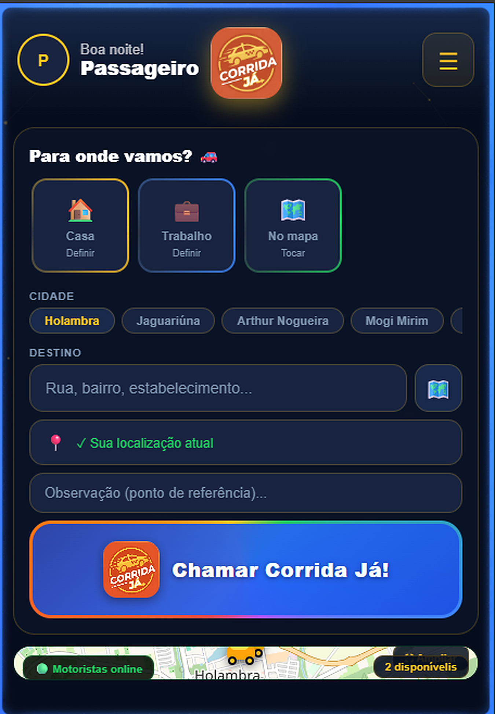
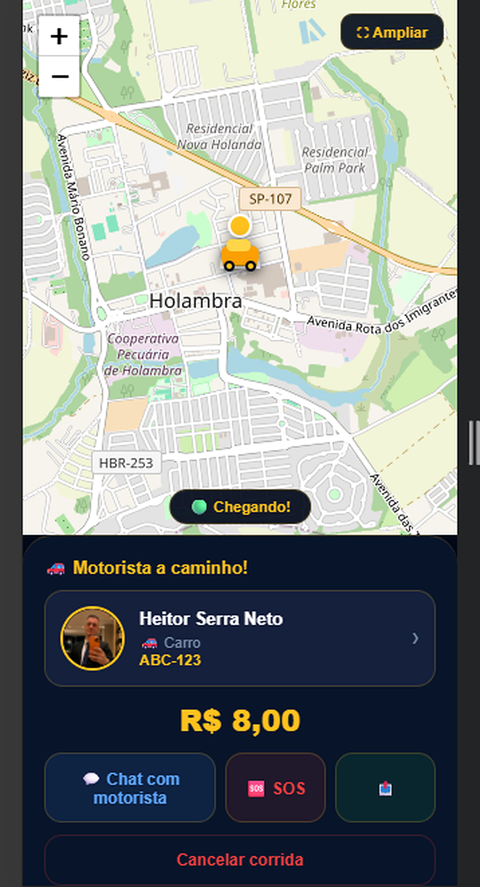
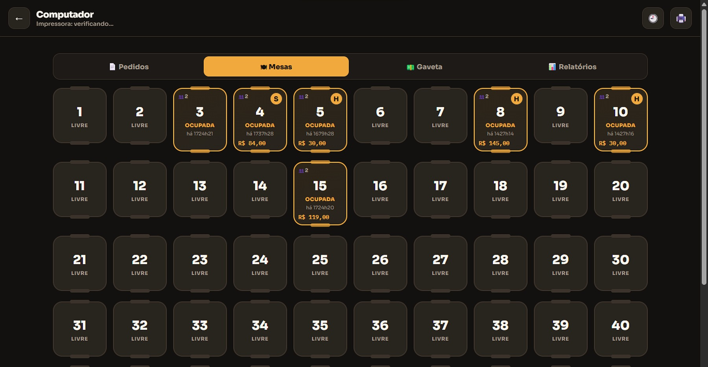
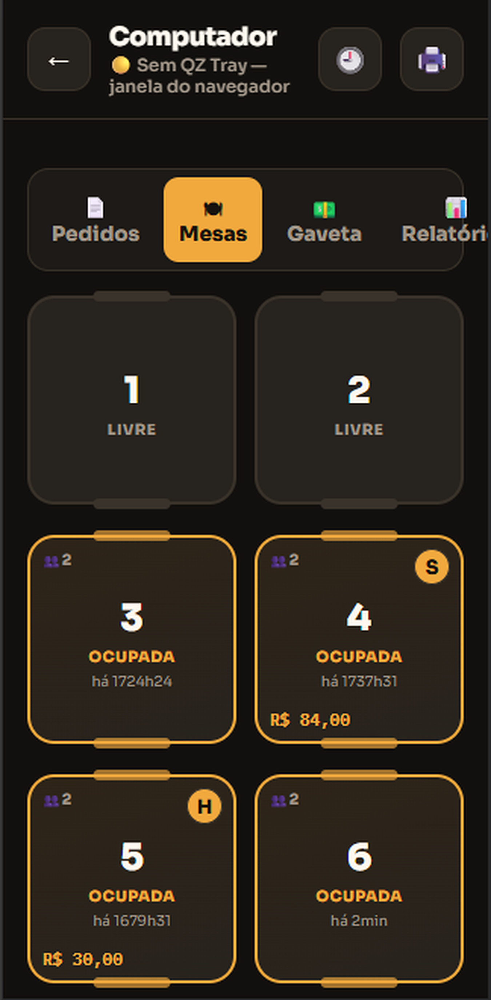
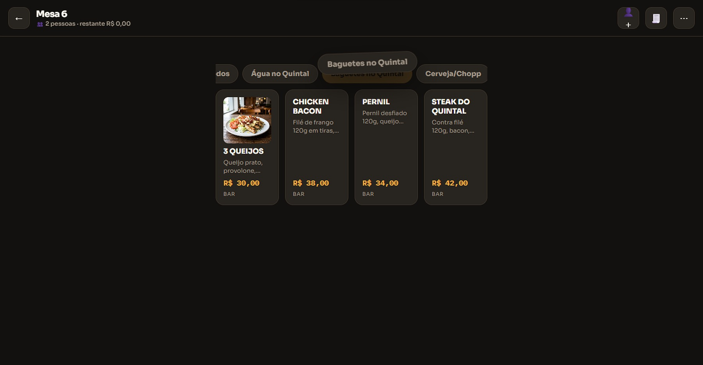
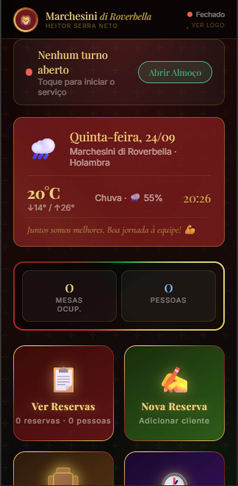
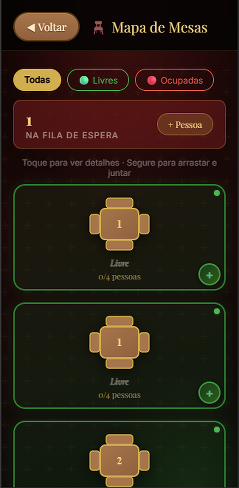
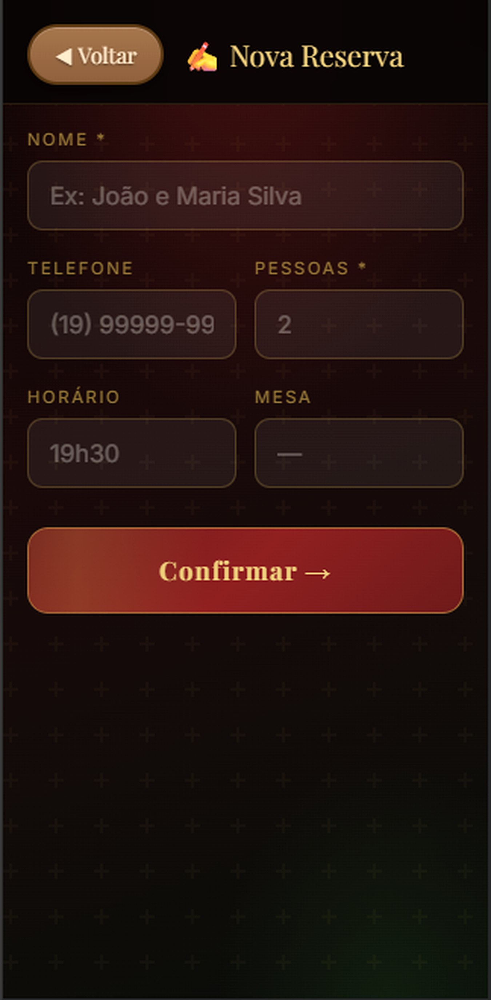
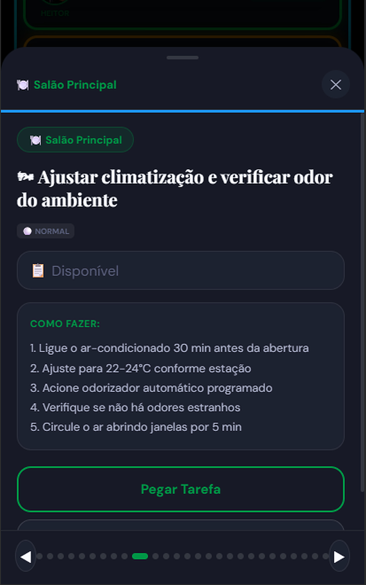
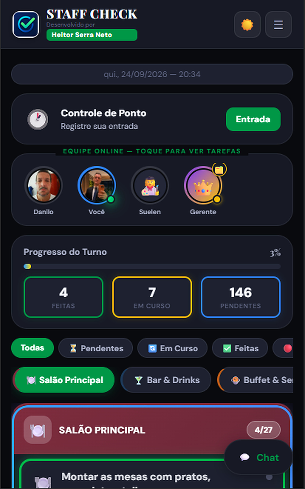

Celular, tablet e computador com experiência pensada para cada tela.
SOLUÇÕES DIGITAIS SOB MEDIDA
Transformo ideias em sistemas que funcionam.
Desenvolvo aplicativos, sistemas web, PWAs, integrações e automações para negócios reais — do conceito à implantação.
20+soluções comercializadas
Web + Mobileexperiências responsivas
Tempo realintegração entre dispositivos
const ideia = cliente;const solução = desenvolver(ideia);deploy(solução);
Operação, clientes, equipe, pedidos, filas, mesas, relatórios e fluxos sob medida.
Dados, alertas, mapas, notificações e usuários sincronizados entre dispositivos.
IA generativa e automações aplicadas para simplificar processos e ganhar eficiência.
01 • MOBILIDADE
Corrida Já
Uma história completa: o passageiro chama, o motorista recebe, aceita, chega e conclui a corrida.
01
Ela chama a corrida
Destino, localização atual, estimativa de valor e chamada da corrida em poucos toques.

02
A solicitação chega ao motorista
O motorista vê a chamada, os dados da corrida e pode aceitar ou recusar. Tudo acontece em tempo real.
03
O carro vem até o passageiro
Conforme a viagem começa, o passageiro acompanha o motorista no mapa e sabe quando ele chegou.
Já cheguei!

04
Passageiro atendido. Motorista faturando.
Uma solução completa para mobilidade local, com fluxo para os dois lados da operação.
Mapa & GPSRota e preçoPassageiro + motoristaStatus em tempo real
02 • RESTAURANTES
PDV para Restaurantes
Do salão ao caixa: mesa, pedido, alerta, impressão e fechamento conectados.
01
O dono enxerga o salão inteiro
Mesas livres e ocupadas, valores, quantidade de pessoas e situação de cada atendimento.

02
O garçom tira o pedido na mesa
O pedido é lançado pelo celular e chega ao caixa com sinalização visual e sonora, pronto para impressão e acompanhamento.

Operação que acompanha o ritmo do restaurante
Abre e fecha conta, junta ou separa mesas, venda balcão, desconto, cortesia, diferentes pagamentos e relatórios.

03 • RESERVAS & FILA
Reservas
Casa cheia sem desorganização: reservas, fila, mesas e comunicação coordenadas.
01
A recepção acompanha tudo
Reservas, pessoas aguardando, ocupação e disponibilidade ficam centralizadas no sistema.

02
Uma mesa fica livre
A equipe atualiza a mesa pelo celular. A recepção recebe o aviso e identifica quem deve ser atendido em seguida.

Mesa 5 livre • próximo cliente pode ser chamado
Da fila para a mesa certa
Contato por WhatsApp, tempo de chegada configurável, histórico, alertas e vários dispositivos conectados.

04 • OPERAÇÃO & EQUIPE
Staff Check
Checklist inteligente, ponto, escala, chat, tarefas e acompanhamento da equipe.
01
A tarefa chega clara e objetiva
O funcionário vê o que precisa fazer, recebe instruções, assume a tarefa e registra a execução.

00:20:00 tempo ilustrativo de execução
02
O gerente acompanha o turno
Quem está online, o que já foi feito, o que está em andamento e o que ainda falta — sem precisar perguntar para cada pessoa.

Um sistema adaptável ao negócio
Restaurante, pizzaria, farmácia ou outra operação: tarefas por setor, fotos, tempos, ponto, folgas, chat e pontuação opcional.
100%Tarefas do turno concluídas
DEPOIMENTOS
O que clientes já disseram
Comentários reais apresentados sem expor nomes ou empresas.
★★★★★
“Atendeu totalmente às minhas expectativas. O sistema ficou exatamente como eu precisava.”Cliente • solução sob medida
★★★★★
“O aplicativo ficou pronto em apenas duas semanas. Processo profissional e sempre disponível para ajustes.”Cliente • aplicativo comercial★★★★★
“Expliquei o que precisava, ele entendeu e sugeriu uma solução melhor. O resultado ficou realmente adequado ao meu negócio.”Cliente • comércio da região
QUEM DESENVOLVE
Heitor Serra Neto
Desenvolvimento de Software • Web • Aplicações • Inteligência Artificial
Atuo com tecnologia e desenvolvimento web desde o início dos anos 2000, criando soluções digitais para necessidades reais de empresas e usuários.
Curso Tecnologia em Inteligência Artificial Aplicada na PUCPR, com conclusão prevista para dezembro de 2026, além de formação técnica em Informática e Web Design.
<ideia> cliente</ideia>
→ arquitetura
→ desenvolvimento
→ testes
→ implantação ✓Vamos conversar sobre o seu projeto?
Desenvolvimento direto, solução sob medida e acompanhamento do início à implantação.